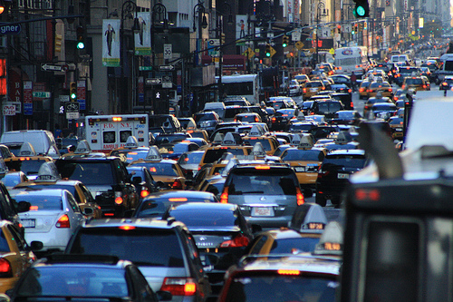
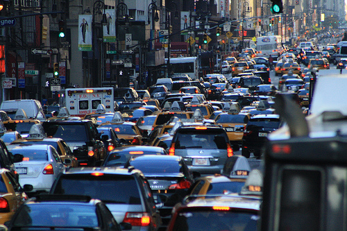

Welcome to New York City!

 

The City in Question...
New York is a state in the northeastern United States and is the fourth-most populous, and seventh-most densely populated U.S. state. With a population
of 8.55 million people in 2015 it is one of the most populous cities in the US. New York also has one of the most extensive and oldest infrastructures
in the country.
The New York State Department of Motor Vehicles (NYSDMV or DMV) is the governmental agency responsible for registering and inspecting automobiles
and other motor vehicles, as well as licensing drivers in the State of New York. And as of 2008, the NYSDMV has over 10,697,644 vehicle registrations in
force. This is practically a portion of vehicles and cars travelling within the state borders. In NY alone of the 304,804 crashes that happened in 2013,
1,109 were fatal crashes that involved vehicles, drivers, pedestrians and bicyclists.
Based on ASIRT nearly 1.3 million people die per year and over 20 million are injured as a result of road crash accidents. Due to the extremely high number of
accidents and fatalities and injuries resulting from it can indeed be seen that this is a major point of interest for any major city in the world.
Why this seems Necessary...
Therefore traffic accidents and incidents are a point of interest for governments and citizens of any countries. So we decided to do our
project using the NYPD Motor Vehicle Collisions data set. Our plan is to implement a system where we would be able to have a look at the most dangerous streets and places
very susceptible to accidents and if there were changes over the years, signifying that the authorities tried doing something about it. With the
help of machine learning we should be able to predict a number of accidents for zones and streets.
Since the basic crux of our project is the analysis of the vehicle collisions happening in New York and find out which vehicles are the safest ones, at what hour is the safest and
to see if it depends on the zone (more crowdy zone should get more accidents), we hope as a final result of the project to have some impact in form of visualising
the analysed data and presenting it in a format that would be understandable to the common people in order for them to understand the major risks related with
traffic and that safety is always the priority since human lives cannot be replaced!
The following Link leads to the iPython Notebook:
Notebook